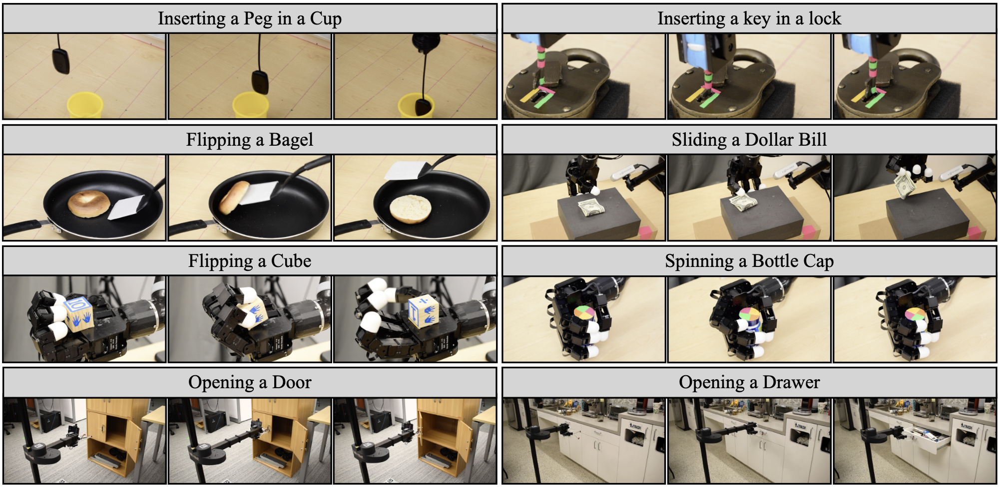
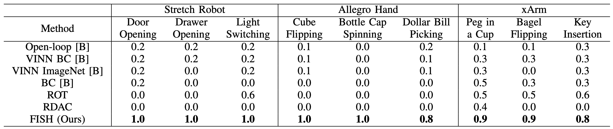

Teach a Robot to FISH: Versatile Imitation from One Minute of Demonstrations
Abstract
While imitation learning provides us with an efficient toolkit to train robots, learning skills that are robust to environment variations remains a significant challenge. Current approaches address this challenge by relying either on large amounts of demonstrations that span environment variations or on handcrafted reward functions that require state estimates. Both directions are not scalable to fast imitation. In this work, we present Fast Imitation of Skills from Humans (FISH), a new imitation learning approach that can learn robust visual skills with less than a minute of human demonstrations. Given a weak base-policy trained by offline imitation of demonstrations, FISH computes rewards that correspond to the “match” between the robot’s behavior and the demonstrations. These rewards are then used to adaptively update a residual policy that adds on to the base-policy. Across all tasks, FISH requires at most twenty minutes of interactive learning to imitate demonstrations on object configurations that were not seen in the demonstrations. Importantly, FISH is constructed to be versatile, which allows it to be used across robot morphologies (e.g. xArm, Allegro, Stretch) and camera configurations (e.g. third-person, eye-in-hand). Our experimental evaluations on 9 different tasks show that FISH achieves an average success rate of 93%, which is around 3.8× higher than prior state-of-the-art methods.
Method
Fast Imitation of Skills from Humans (FISH) is an adaptive imitation learning algorithm where given a few demonstrations for complex, contact-rich manipulations that covers a small subset of possible object configurations, we seek to learn a robot policy that can generalize to a larger set of configurations not seen during the demonstrations. To enable this, we propose Fast Imitation of Skills from Humans (FISH). FISH operates in two phases. In the first phase, a weak base policy is trained on the few demonstrations using supervised learning. This weak policy, while being poor in generalization, serves as a useful prior for subsequent adaptation. In the second phase, a residual policy is trained to adapt the base policy to new object configurations. This is done by performing reinforcement learning (RL) on the robot with these configurations using visual trajectory matching scores as the reward signal.
Our method and findings can be summarized as follows:
- FISH achieves an average success rate of 93%, which is around 3.8× higher than prior state-of-the-art methods.
- FISH does not require hand crafted reawrd functions.
- FISH enables guided exploration on a provided subspace of the action space, yeilding safter exploration.
- Abalation experiments convey in detail the various design decisions made from freezing the encoder to the choice of base policies used.
Real-World Tasks
We demonstrate the versatility of our algorithm by evaluating our approach on a suite of 9 tasks of varying difficulty across three different robot morphologies. We collect 1 minute of demonstrations (between 1 to 3 trajectories) for each task and allow a maximum of 20 minutes of online learning. For all tasks, we operate purely in the visual domain.
Robot Results
Robot Rollouts


Limitations
To summarize our experiments, we showcase the effective- ness of our algorithm when operating in a low data regime with a limited budget for environment interactions. We demonstrate a significant improvement in performance as compared to prior state-of-the-art work and provide extensive ablations to justify our design choices. However, we recognize a few limitations in this work: (a) Since the OT-based rewards used to train the residual policy aligns the agent with the demonstrations, it relies on the demonstrator being an ‘expert’. (b) We restrict ourselves to the visual domain which makes it difficult to perform precise tasks where the visual signals are not very prominent. For example, it is difficult to infer a key hole spanning a miniscule portion of an image. A potential improvement along this line might result from embracing other modalities such as tactile sensing. (c) Our residual policy is randomly initialized. Pretraining the residual policy might help scale to more difficult tasks requiring more precise control.
Conclusion
In this work, we present a new algorithm for fast imitation learning, FISH, that demonstrates improved performance compared to prior state-of-the-art work on a variety of real robot tasks across three different robot morphologies. We demonstrate that combining an imperfect base policy with a learned residual policy can enable performing precise tasks with one minute of demonstration collection and limited en- vironment interactions. Further, we ablate over various design decisions of FISH, which shows the importance of learning stable representations, choosing the right base policy, and performing guided exploration. While powerful, we recognize that FISH has limitations. We believe that further research into developing better visual representations, perhaps through large robot models could improve generaliza- tion across object categories along with object configurations.